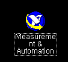
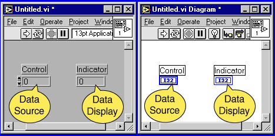

LabView
- PCI-1200 I/O connector pin assignments

- DAQ board setting

- Scan rate(=sample rate)
- Number of Samples
- fsdaf
- Local variable
- indicator terminal has a thick border(<=>control terminal has
a thin border) :

- 변수에 따른 색깔
-
- index array
-
- Execution file builder
NI 정보
- 본사, 한국지사
- Simultaneous Analog Input and Output Tutorial -- Learn the three methods
for
conducting simultaneous analog input and output. Get the full story
at
http://www.ni.com/info/ninews/20000804.htm
- Free NI-Scope Software Expands Capability of National Instruments
Digital
Oscilloscopes -- Extract more functionality from National Instruments
digital
oscilloscopes with a free upgrade to the latest version of NI-Scope
driver
software. Get the full story at http://www.ni.com/info/ninews/20000809.htm